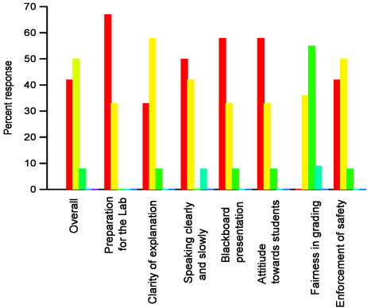

And that is it! A condensed informative tool, letting us know what went right and what when not, in the opinion of the recipient of our service. After receiving these form every quarter, I always engaged in a thought process trying to improve in all aspects for the next term. This is an ongoing process, in which we teach the students our science and learn from them the art of good teaching.